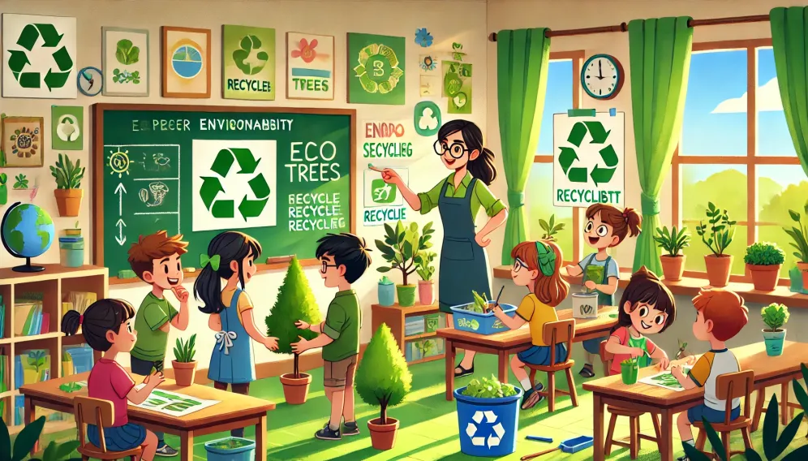

Guía Didáctica

Grado: 5° de primaria
Asignatura: Múltiples lenguajes, proyectos comunitarios y escolares
Duración: 4 sesiones
Tema: Sostenibilidad ambiental y cuidado del medio ambiente
Propósito: Promover el análisis de problemas ambientales y la generación de soluciones creativas mediante una campaña de concientización.
Objetivos:
- Reflexionar sobre la importancia del cuidado del medio ambiente.
- Identificar los principales problemas ambientales y sus causas.
- Proponer soluciones prácticas y sostenibles a dichos problemas.
- Desarrollar habilidades de investigación, comunicación y trabajo en equipo.
- El medio ambiente y sus componentes: Elementos naturales, recursos renovables y no renovables.
- Problemas ambientales actuales: Contaminación del aire, agua y suelo, cambio climático, pérdida de biodiversidad, etc.
- Estrategias para el cuidado del medio ambiente: Reducir, reciclar, reutilizar y energías renovables, etc.
- Sesión 1: Introducción y organización de equipos
- Sesión 2: Investigación y planificación
- Sesión 3: Creación de la campaña
- Sesión 4: Presentación de las campañas
Comentarios finales: Esta web quest fue diseñada para un grupo en específico. Las adecuaciones deberán realizarse de acuerdo al grado y necesidades específicas.